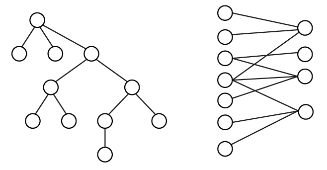
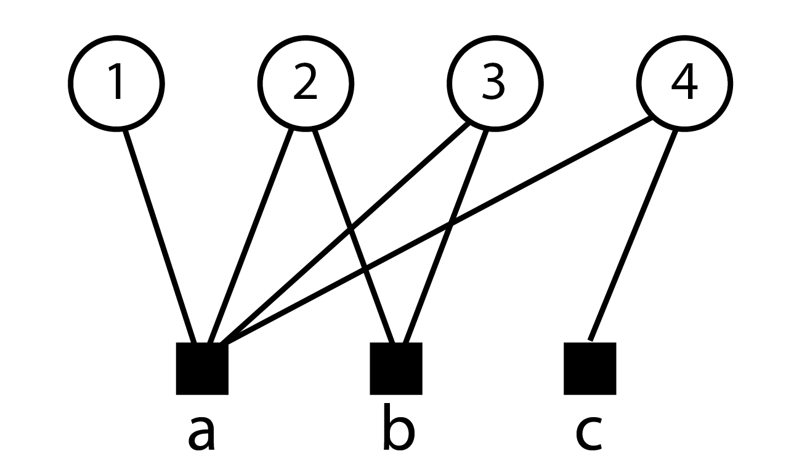
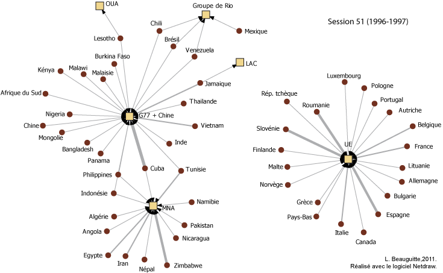
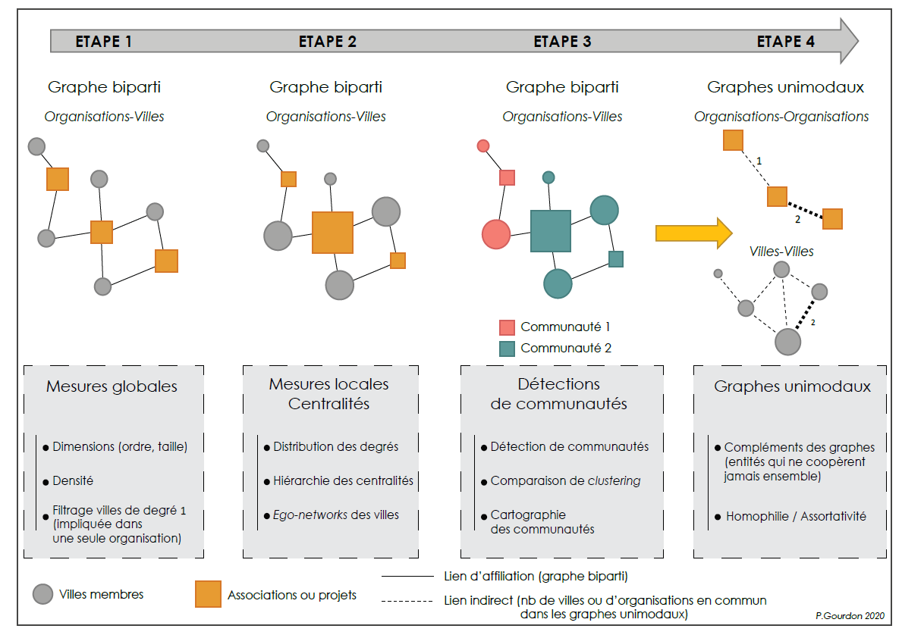

7 Analyser des réseaux bimodaux
7.1 Précisions terminologiques
Un petit point de vocabulaire pour commencer : les termes de réseaux bipartis (bipartite) et bimodaux (2-mode), ceux de réseaux d’affiliation (affilation network) et d’interlock sont régulièrement utilisés comme synonymes. Au sens strict du terme, un réseau \(R\) est biparti s’il est possible de diviser l’ensemble des sommets \(V\) en deux sous-ensembles disjoints \(V_1\) et \(V_2\) tels que tout lien de \(R\) a une extrémité dans \(V_1\) et l’autre dans \(V_2\). Tout arbre par exemple est un graphe biparti (figure 7.1).

En théorie des graphes, tout arbre (graphe connexe acyclique) et toute forêt (graphe non connexe acyclique) est un graphe biparti : il est en effet toujours possible de créer une partition des sommets en deux sous-ensembles \(V_1\) et \(V_2\) telle que tout lien ait une extrémité dans \(V_1\) et l’autre dans \(V_2\).
Quand on utilise ce terme en analyse de réseau, on suggère le plus souvent que le réseau étudié est bimodal, c’est-à-dire qu’on étudie les relations entre deux ensembles différents de sommets (des actrices \(V_1\) jouant dans des films \(V_2\), des autrices \(V_1\) publiant dans des revues \(V_2\), des relations entre enseignantes \(V_1\) et élèves \(V_2\), etc. etc.) ; les liens éventuels entre les sommets de \(V_1\) et entre les sommets de \(V_2\) ne sont pas pris en compte.
Le réseau d’affiliation lie des individus à des organisations. L’interlock est un cas particulier de réseau d’affiliation où les organisations en question sont des conseils d’administration. On peut également trouver le terme d’actor-event network signalant la participation de personnes à des événements. Ces trois types de réseau sont des formes particulières de réseau bimodal.
Dans la majorité des cas, la direction n’est pas prise en compte et le lien n’est pas valué. Mais on pourrait tout à fait imaginer des liens orientés et valués.
Exemple : soit un réseau bimodal de participantes (\(V_1\)) à des conférences (\(V_2\)). On pourrait construire un réseau orienté en distinguant les personnes invitées par les organisatrices de la conférence (lien de \(V_2\) vers \(V_1\)) et les personnes qui demandant à participer à la conférence (lien de \(V_1\) vers \(V_2\)). Le lien pourrait être valué en indiquant le coût (en temps de voyage, en frais d’inscription, etc.) pour les participantes.
7.2 Du réseau bimodal aux réseaux unimodaux
La méthode d’analyse la plus couramment utilisée pour les réseaux bimodaux est de réaliser une projection afin les transformer en deux réseaux unimodaux non orientés et valués 1. Ces liens sont ensuite généralement dichotomisés (1 si l’intensité de la relation dépasse un seuil donné, 0 sinon) et le réseau projeté est analysé comme un réseau unimodal simple.
Exemple : soit un ensemble \(V_1\) d’autrices et un ensemble \(V_2\) d’articles (figure 3.6). Le moyen le plus fréquent d’analyser ces données est de créer deux réseaux unimodaux non orientés, l’un pour les autrices, l’autre pour les articles. Un lien entre les autrices indiquent qu’elles ont publié ensemble 1 à \(V_2\) articles; un lien entre deux articles indique qu’ils ont en commun 2 à \(V_1\) autrices.
Il existe des méthodes plus subtiles pour passer du réseau bimodal au réseau unimodal valué, méthodes issues notamment de la bibliométrie. Si un article a deux autrices, on peut supposer qu’elles se connaissent et qu’elles ont réellement travaillé ensemble. Si, comme c’est le cas dans certaines disciplines, un article a plusieurs dizaines d’autrices, il est probable que l’interconnaissance soit plus faible. On peut donc choisir la valuation du lien de cosignaure qui sera d’autant plus faible que le nombre d’autrices est élevé.
Les méthodes permettant d’analyser les réseaux unimodaux valués ont déjà été abordées précédemment. L’objectif de ce chapitre est de montrer comment analyser les données tout en gardant la structure bimodale du réseau. Je rappelle par ailleurs que ces données pourraient être modélisées sous forme d’hypergraphe (un article = 1 lien, une autrice = 1 sommet) ; les analyses d’hypergraphes restant très rares en sciences sociales, elles ne seront pas abordées.
7.3 Quelques mesures
Les mesures vues dans les chapitres précédents doivent généralement être adaptées pour prendre en compte la nature bimodale du réseau ; les définitions restent les mêmes et ne sont rappelées que pour mémoire.
7.3.1 Ordres, taille & diamètre
L’ordre est le nombre de sommets d’un réseau, on précisera dans le cas d’un réseau bimodal l’ordre des deux ensembles de sommets \(V_1\) et \(V_2\). La taille est le nombre de liens du réseau : les réseaux bimodaux ne sont par construction jamais vides. Le nombre maximum de liens dans un réseau bimodal est égal à \(V_1 \times V_2\).
La définition de la connexité et des composantes ne change pas. Le calcul du diamètre (plus long des plus courts chemins) d’un réseau bimodal connexe ne pose aucun problème particulier ; on peut cependant distinguer un diamètre pour chaque ensemble de sommets.
7.3.2 Centralités
La définition du degré ne change pas et reste le nombre de liens adjacents à un sommet. La seule différence concerne la normalisation de la mesure : le degré maximal d’un sommet de l’ensemble \(V_1\) correspond au nombre de sommets présents dans l’ensemble \(V_2\) et, par construction, il est rare d’avoir des sommets isolés donc le minimum est généralement 1 (figure 7.2). Lorsqu’on commente les degrés d’un réseau biparti et leur distribution, on commente les résultats pour l’un des ensembles de sommets puis ceux obtenus pour l’autre ensemble.

Pour calculer le degré, on fait la somme marginale de la matrice rectangulaire correspondant au réseau étudié. Pour normaliser cette mesure, on divise par le nombre de sommets présents dans l’autre ensemble de sommets. L’opération pour les sommets du haut n’est pas indiquée car ils ont tous le même degré (2) et donc le même degré pondéré (2/3), à l’exception du sommet 1 (degré 1 et degré normalisé 1/3).
Les centralités de vecteur propres sont à ma connaissance rarement mobilisées pour étudier des réseaux bimodaux. Pourtant Bonacich a proposé dès 1991 une mesure de la centralité des événements proportionnelle à la centralité des individus qui y assistent et une centralité des acteurs proportionnelle aux événements auxquels ils participent (Bonacich (1991)).
Le calcul des centralités d’intermédiarité et de proximité ne pose pas de problème particulier d’un point de vue mathématique mais il peut-être plus délicat d’analyser les résultats d’un point de vue thématique.
7.3.3 De la triade au cycle de longueur 4
Il ne peut exister par construction de triade fermée au sein d’un réseau bimodal. La mesure de la transitivité étant devenue très populaire suite à l’article de Watts et Strogatz sur les réseaux petit-monde, il existe des dizaines de propositions permettant d’adapter cette mesure aux réseaux bimodaux 2 et de manière générale à tous les types de réseaux.
L’indicateur global est obtenu en divisant le nombre de nombre de cycles de longueur 4 par le nombre de chemins de longueur 4. Il varie entre 0 (absence de chemin) et 1 (réseau complet).
Exemple : dans le réseau de la figure 7.2, le seul cycle de longueur 4 présent est le cycle \(\{a2, 2b, b3, 3a\}\) (le point de départ n’a aucune importance). Un exemple de chemin de longueur 4 est \(\{c4, 4a, a3, 3b\}\).
7.3.4 Cliques et communautés
Il est possible d’adapter la définition de la clique en prenant en compte la nature bimodale du réseau étudié : il s’agit du sous-graphe maximal complet composé d’au moins 4 sommets, 2 sommets minimum étant inclus dans \(V_1\) et deux sommets minimum étant inclus dans \(V_2\). Dans le réseau de la figure 7.2, l’ensemble de sommets \(\{ab23 \}\) forme la seule bi-clique du réseau.
La détection de communautés étant tout aussi populaire que la transitivité, de très nombreuses méthodes ont été et sont proposées pour prendre en compte la nature bimodale du réseau étudié.
N’ayant pas les compétences mathématiques pour hiérarchiser les méthodes proposées d’une part, considérant que ces méthodes ne sont pas implémentées dans les logiciels courants en analyse de réseau d’autre part, il ne me paraît pas tout à fait utile de poursuivre sur ce sujet.
7.3.5 Boucle et copinage (mais pas que)
Il est souvent intéressant de garder la structure bimodale des données et il est possible de produire des résultats thématiquement intéressants, même avec des mesures basiques. Les deux exemples qui suivent ne prétendent absolument pas être représentatifs ou exemplaires et sont très (trop) clairement ancrés dans ma discipline mais ils me paraissent cependant dignes d’être évoqués.
Exemple 1 : dans ma thèse (Beauguitte (2011)), j’ai notamment étudié les déclarations faites à l’Assemblée générale de l’ONU par les groupes régionaux puis j’ai relevé les déclarations faites par des représentant.e.s des États membres qui déclaraient soutenir ou d’associer aux déclarations faites au nom des groupes régionaux. Ce relevé a été fait à quatre dates différentes et sur les réseaux bipartis obtenus, j’ai mesuré l’ordre (\(V_1\) nombre d’États et \(V_2\) nombre de groupes régionaux), la densité, la distance moyenne à l’intérieur de la plus grande composante connexe, le diamètre (idem) et le nombre de composantes connexes.

Les liens sont valués, un État pouvant soutenir à plusieurs reprises des déclarations faites par un groupe régional ; la valuation des liens n’a pas été utilisée pour le calcul des indicateurs. Le simple examen visuel montre un clivage net UE et pays occidentaux vs le reste du monde et l’absence des États-Unis qui se méfient beaucoup de l’AG de l’ONU.
Exemple 2 : dans sa thèse soutenue en 2021, Paul Gourdon s’intéresse à la participation de villes à des associations européennes ainsi qu’à leur participation à des projets de recherche. Le chapitre 4 est consacré à l’étude des réseaux bimodaux. Il mobilise différents indicateurs (ordre, taille, densité, distribution des degrés, centralités, réseaux personnels des villes) avant de tester différentes méthodes de détection de communautés. La transformation en réseau unimodal termine l’analyse et cherche à mettre en évidence les liens absents ainsi que l’homophilie des villes et des organisations.

Extrait de la thèse de Gourdon (2021), p. 262. La lecture de l’ensemble du chapitre 4 est conseillée ; l’auteur a mis à disposition le code R écrit pour réaliser ses analyses et la thèse est évidemment disponible en ligne.
L’opération matricielle correspondante est décrite dans l’annexe.↩︎
Voir en première approche les références listées par l’informaticien Tore Opsahl sur son site à la page Two-mode network clustering. J’utilise dans la suite de cette section les formules qu’il a proposées ; je ne sais pas si ce sont les plus pertinentes mais elles sont implémentées dans
R(packagetnet) et donc utilisables en sciences sociales.↩︎